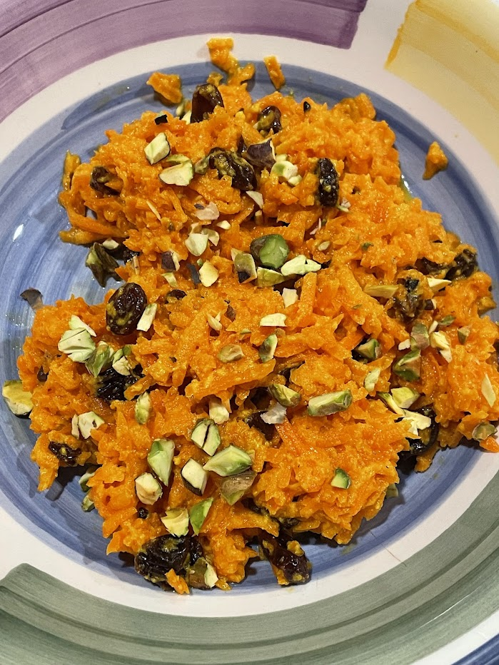

Carrot pudding
Carrot pudding (gajar ka halwa)
A bowl of carrot pudding, made with black raisins and garnished with toasted pistachios. The tiny yellowish grains indicate that it got too hot while cooking, which curdled the milk and made the texture slightly worse.
Ingredients
- 1 tbsp of ghee
- Around 5 orange or red carrots
- 1/2 tsp freshly ground green cardamom
- 1 can of sweetened condensed milk
- Pistachios and almonds (or some other nuts)
- Raisins
Instructions
Wash and peel the carrots, then shred them. The outer part of a carrot is woodier, so peeling them makes them more tender. Shredding them finely will take longer but result in a nicer texture. Simmer carrots on very low heat with ghee, condensed milk, and cardamom until the mixture is soft and any liquid at the bottom has evaporated or incorporated. Once that liquid is nearly gone, you will need to stir constantly to prevent sticking and burning. Shell pistachios, crush them and the almonds finely, and toast the nuts in a pan. Once the carrots are nearly done cooking, mix in the nuts and raisins.
Notes
If you have to shell the pistachios by hand or shred the carrots without a food processor, this can be a lot of work to make. Since those tasks can all be done at the same time, this dish is great to make with your friends or family.